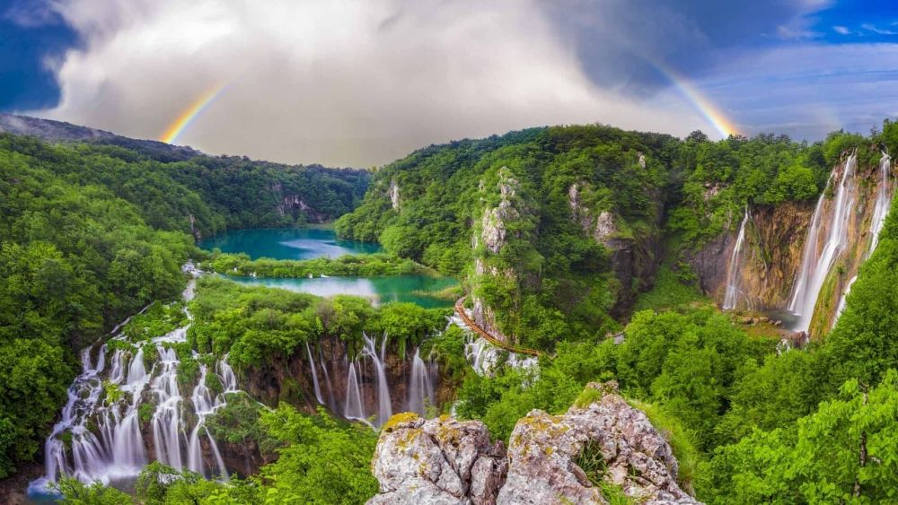

Descoperă Parcul Național Plitvice - O călătorie în Croația
Parcul Național Plitvice este faimos pentru peisajele sale naturale uimitoare și cascadele spectaculoase, oferind o experiență unică pentru vizitatori:
-

Cascadele din Parcul Național Plitvice - Minuni naturale
Explorați rețeaua de cascade, lacuri și râuri care creează peisaje de basm.
-

Pasarelele din Parcul Național Plitvice - Drumeții captivante
Străbateți pasarelele de lemn pentru a descoperi frumusețea naturii înconjurătoare.
-

Flora și fauna din Parcul Național Plitvice - Diversitate biologică
Aflați mai multe despre speciile de plante și animale care trăiesc în această zonă protejată.
-

Puncte de belvedere în Parcul Național Plitvice - Panorame impresionante
Urmăriți priveliștile uimitoare ale parcului din punctele de belvedere înalte.
-

Cascada Veliki Slap în Parcul Național Plitvice - Cea mai înaltă cascadă
Vizitați impresionanta cascada Veliki Slap, cea mai înaltă din parc.
Concluzii
Parcul Național Plitvice oferă o experiență naturală incredibilă, cu peisaje și biodiversitate remarcabile.